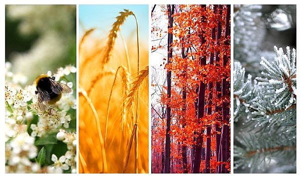

A1 · Lekcja 17 · Strona 2
Rok ma dwanaście miesięcy

Tekst po polsku
Rok ma tylko dwanaście miesięcy… W styczniu świętujemy Nowy Rok i pada śnieg. W lutym jest zimno. W marcu mamy pierwszy dzień wiosny. W kwietniu jest Prima Aprilis i Wielkanoc. W maju świeci słońce, a dni są długie i ciepłe. W czerwcu kończy się szkoła i wszyscy planują urlopy. W lipcu zaczynają się wakacje i jest gorąco. W sierpniu często są burze. We wrześniu dzieci idą do szkoły, a w październiku studenci wracają na studia. W listopadzie pada deszcz, czasem pada pierwszy śnieg, a dni są krótkie. W grudniu mamy święta Bożego Narodzenia i bawimy się na Sylwestra. A potem znowu jest styczeń, luty, marzec…
Перевод
Год имеет только двенадцать месяцев… В январе празднуем Новый год и идёт снег. В феврале холодно. В марте — первый день весны. В апреле — 1 апреля и Пасха. В мае светит солнце, а дни длиннее и теплее. В июне заканчивается школа, и все планируют отпуска. В июле начинаются каникулы, очень жарко. В августе часто бывают грозы. В сентябре дети идут в школу, а в октябре студенты возвращаются на учёбу. В ноябре идёт дождь, иногда выпадает первый снег, дни становятся короче. В декабре празднуем Рождество и веселимся в новогоднюю ночь. А потом снова январь, февраль, март…